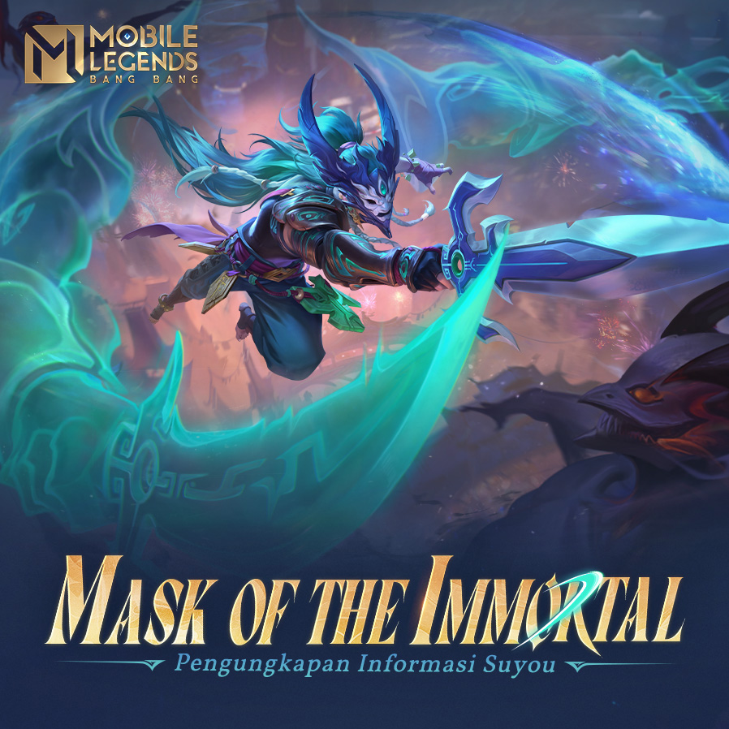
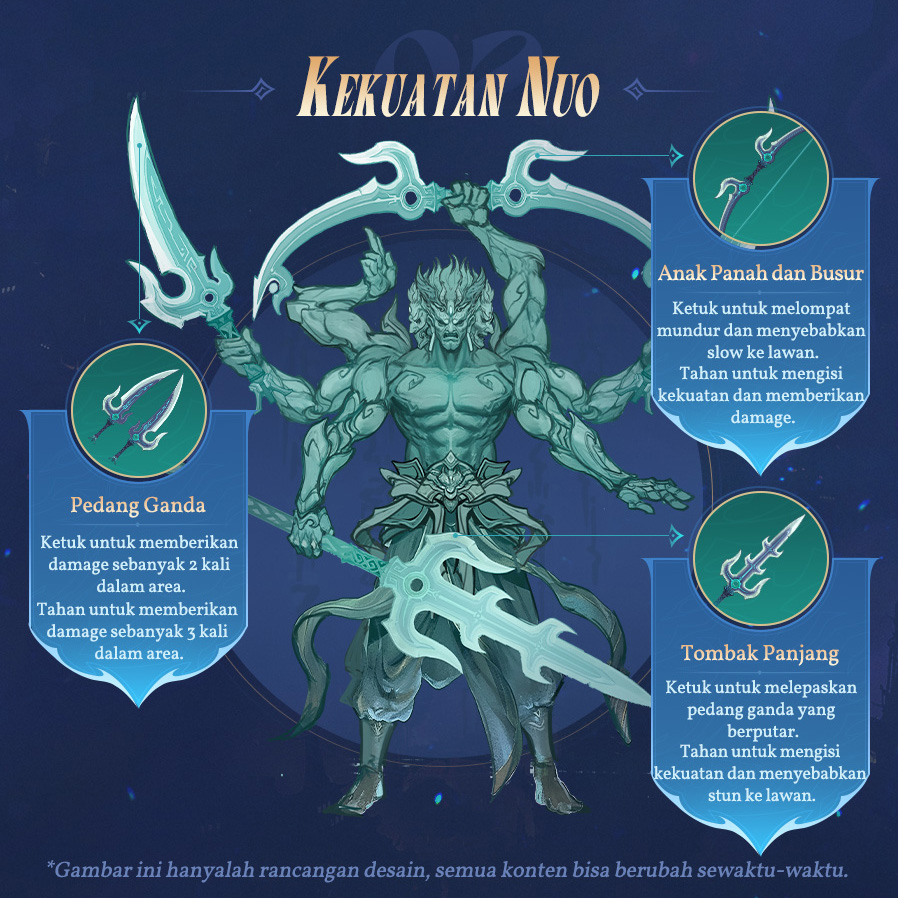
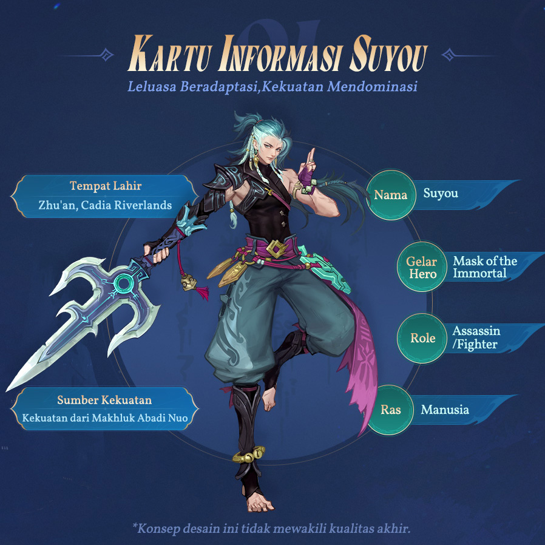
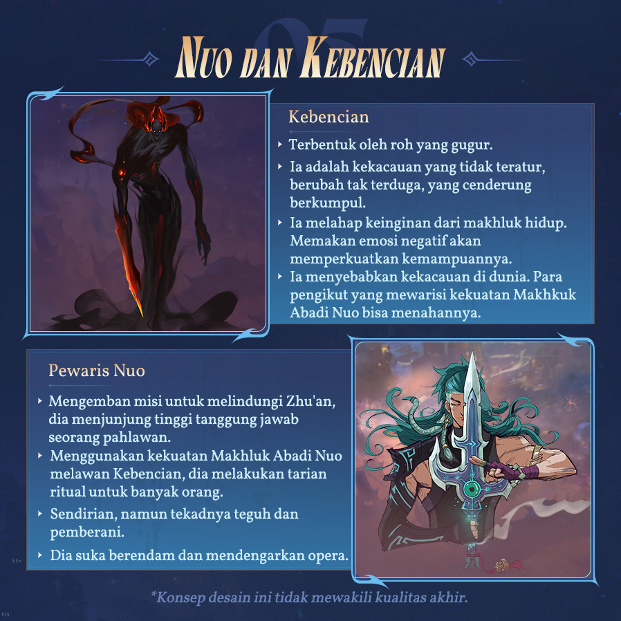
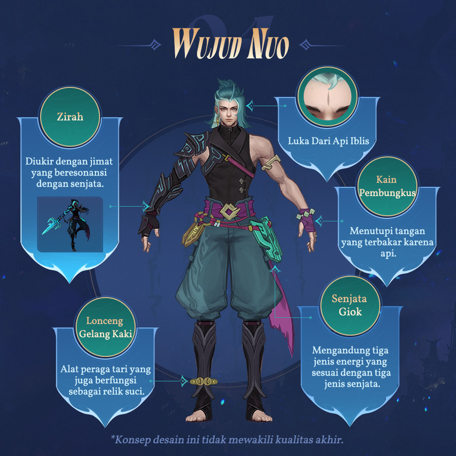
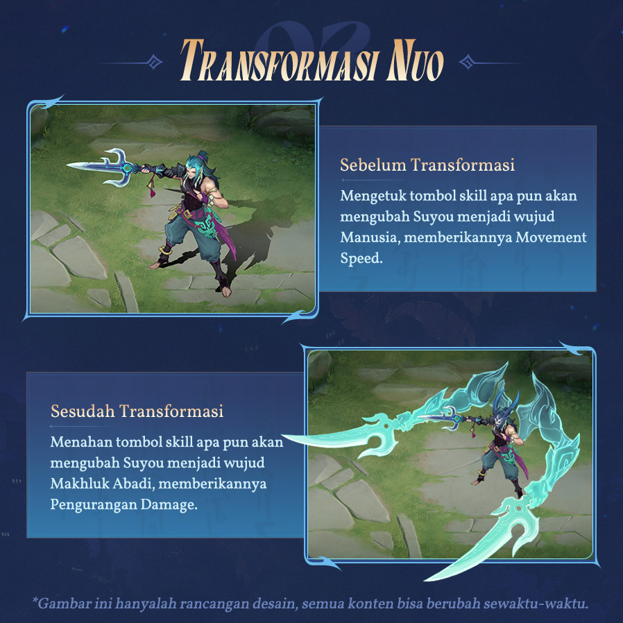

Hero ke 126 : "Suyou, the Mask of the Immortal"
Penasaran dengan Hero Baru bertopeng bernama Suyou ini yang memiliki 6 Efek Skill?
OLEH DHAFID WAHYU KUSUMO 21 SEPTEMBER 2024

Dalam waktu dekat, hero Suyou MLBB akan hadir ke dalam game. Karakter yang memiliki nama lain Mask of the Immortal ini adalah seorang Assassin memiliki banyak senjata dalam bertarung dan dapat berubah wujud di Land of Dawn.
Hero Suyou MLBB akan segera diri lis ke Original Server pada 21 September 2024. Ia akan menjadi hero MLBB ke-126 yang dihadirkan Moonton sebagai developer game setelah Zhuxin beberapa waktu lalu.
Hadirnya hero Suyou MLBB ini akan menjadi kabar baik bagi para player jungler atau EXP laner. Pasalnya hero ini memiliki role Assassin/Fighter yang cukup fleksibel untuk dimainkan di kedua lane tersebut, sesuai dengan kebutuhan penggunanya.
Dengan memiliki role Assassin, artinya hero Suyou MLBB ini memiliki kelincahan dalam bermain. Di sisi lain, dirinya juga memikki ketahanan yang cukup tinggi layaknya para Fighter. Hero lainnya yang memiliki role sama seperti dirinya adalah Alucard, Zilong, Arlott, Yin, Paquito, dan Benedetta, di mana beberapa di antaranya sangat populer di kalangan publik dan pro player saat ini.
Sejauh ini belum diketahui seperti apa skill-skill dan kekuatan yang akan dihadirkan Suyou di dalam game. Namun sudah dipastikan bahwa sang hero akan bermain dengan tiga senjata berbeda dan tiga skill yang memiliki enam efek berbeda.
Hadirnya hero Suyou MLBB ini akan menjadi kabar baik bagi para player jungler atau EXP laner. Pasalnya hero ini memiliki role Assassin/Fighter yang cukup fleksibel untuk dimainkan di kedua lane tersebut, sesuai dengan kebutuhan penggunanya.
Hero Suyou MLBB adalah pewaris kekuatan Nuo yang bisa berubah wujud
Monton sebagai pengembang Mobile Legends menyebut bahwa hero Suyou MLBB sebagai “seorang pengusir setan (exorcist) dari Zhu’an yang mewarisi kekuatan Immortal Nuo”. Deskripsi ini sedikit banyak menunjukkan bahwa Suyou akan memiliki kelebihan dalam hal defense ketimbang attack-nya.
Selain itu, hero Suyou MLBB merupakan hero bertipe Physical yang memiliki kelebihan dalam hal mengejar lawan (chase) dan memiliki damage dengan tipe burst.
Melalui tiga skill yang dimilikinya, masing-masing dari kemampuannya tersebut memiliki dua mode penggunaan. Hal ini lah yang membuat Suyou akan memiliki enam efek skill yang berbeda untuk ia manfaatkan dalam bertarung dan beradaptasi dengan segala situasi yang bakal terjadi di Land of Dawn.
Bahkan dengan menahan tombil skill apa pun yang dimilikinya, akan membuat Suyou berubah wujud dengan menghadirkan sosok seperti Susasnoo dari serial anime Naruto yang akan muncul di belakang dirinya.
Sebagai seorang Assassin/Fighter, hero Suyou MLBB memiliki kemampuan untuk memberikan damage dan juga untuk menahan atau menyerap damage dari lawan. Hal ini akan membuat dirinya menjadi sangat lincah, serbaguna, dan fleksibel di dalam pertarungan.
Hero Ini Dirumorkan menjadi Sasuke Di Collab Serial Anime Mendatang.
Menarik untuk dinantikan seperti apa skill-skill dan kelebihan yang akan ditawarkan oleh Suyou kepada pemain MLBB. Hal ini juga akan meningkatkan antusiasme semua pemain untuk bisa segera mencicipi versi finalnya di Original Server, sama seperti setiap perilisan hero baru.